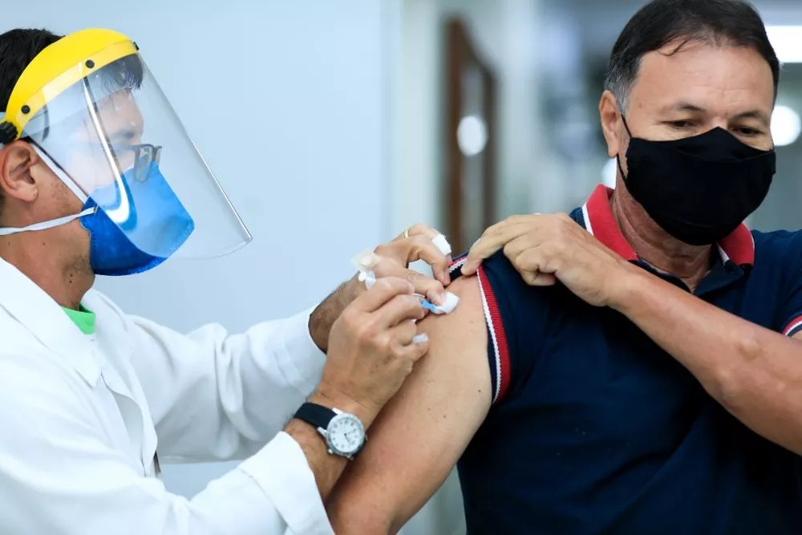
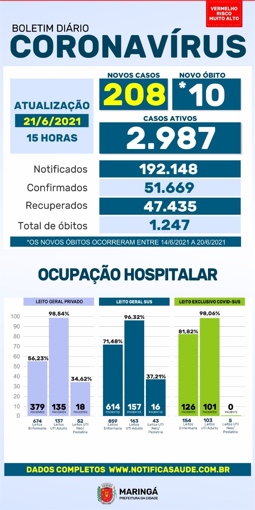
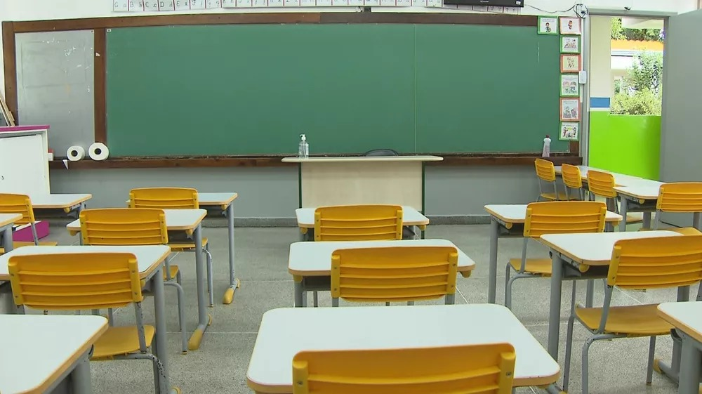
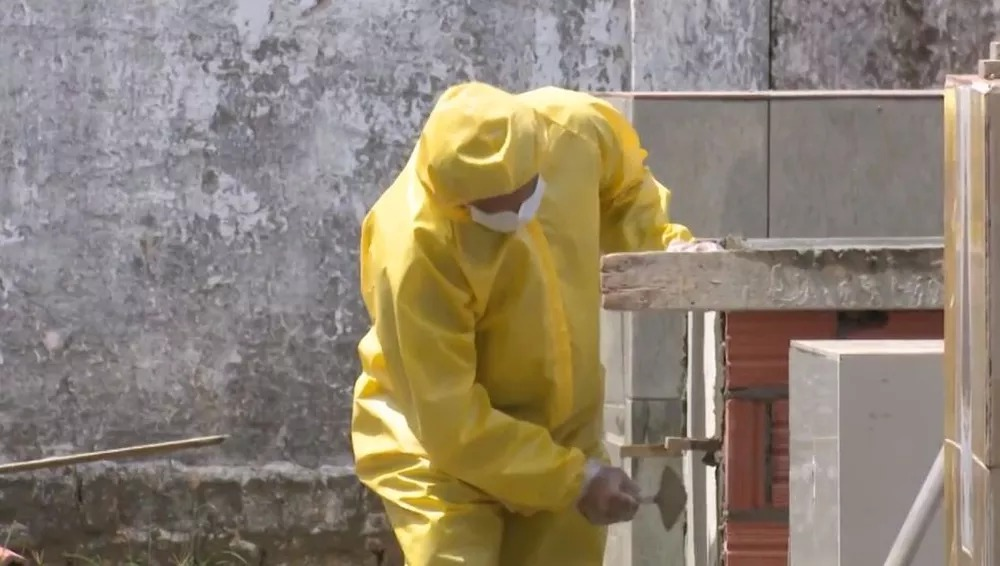
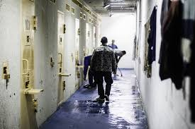

Ultimas notícias sobre o Coronavírus em Maringá
Coronavírus: Maringá vacina pessoas de 44 anos completos ou mais na terça-feira (22)

Maringá, no norte do Paraná, começa a vacinar pessoas com 44 anos completos ou mais contra a Covid-19 a partir desta terça-feira (22).
Não é preciso agendar horário para a imunização, basta levar comprovante de residência, documento pessoal com foto e carteira da vacina. A apresentação destes documentos é obrigatória.
Moradores sem comorbidades e que estão nesta faixa etária poderão procurar as Unidades Básicas de Saúde (UBS) específicas (veja na lista abaixo), das 9h às 17h.
Unidades Básicas onde as vacinas serão aplicadas:
- Pinheiros
- Zona 7
- Mandacaru
- Tuiuti
- Iguaçu
- Policlínica Zona Sul
- Iguatemi
- Floriano
- Aclimação
- Alvorada I
- Alvorada III
- Olímpico
- Império do Sol
- Guaiapó/Requião
- Ney Braga
- Cidade Alta
Saiba os dados da Covid-19 desta segunda-feira (21) em Maringá
Maringá registrou mais 208 casos positivos de coronavírus e 10 óbitos por complicações da doença no boletim desta segunda-feira, 21 de junho. O documento, que acompanha a evolução da Covid-19 na cidade, foi atualizado às 15h e divulgado às 16h57 pela Secretaria Municipal de Saúde.
Veja o perfil das 10 vítimas do boletim desta segunda-feira (21):
As mortes registradas no boletim desta segunda-feira (21) ocorreram entre os dias 14 e 20 de junho.
O sexo dos 208 novos positivados ainda não havia sido divulgado no site Notifica Saúde até o fechamento desta reportagem.
Maringá soma 51.669 casos positivos de coronavírus desde o início da pandemia. Desses, 47.435 já estão recuperados, 2.987 estão com o vírus ativo (em isolamento domiciliar ou internados) e 1.247 morreram por complicações da doença.
O boletim da Covid-19 não apresenta os casos suspeitos. Eles serão gradualmente inseridos entre os descartados, que já somam mais de 114 mil.
Ocupação hospitalar
A taxa de ocupação hospitalar geral nos leitos de UTI adulto em unidades privadas de Maringá está em 98,54% nesta segunda-feira, 21. Já a taxa de ocupação geral em leitos de UTI adulto no SUS está em 96,32% e nos leitos de UTI adulto exclusivos para Covid-19 está em 98,06%.
A matriz de risco é considerada muito alta (bandeira vermelha), de acordo com o boletim da Prefeitura de Maringá.
Veja mais detalhes do boletim do coronavírus desta segunda-feira (21), em Maringá:

Prefeitura de Maringá diz à Justiça que é contra o retorno presencial das aulas nas escolas municipais

A Prefeitura de Maringá, norte do Paraná, informou à Justiça que é contra o retorno imediato das aulas presenciais na rede pública municipal. O motivo, segundo o município, é o novo aumento de casos de Covid-19.

A defesa do município é assinada pela procuradora Regina Lúcia Bendlin, que aponta à Justiça que "a determinação para retorno das aulas presenciais, neste pior momento da pandemia, seria precipitado, o que poderá causar danos e perigo de irreversibilidade dos efeitos da decisão".
Um parecer assinado pelo secretário municipal de Saúde, Marcelo Puzzi, e anexado pela defesa da prefeitura, diz que os motivos para não voltar às aulas são aumento de casos, alta na taxa de positivados e falta de leitos em hospitais.
"No momento epidemiológico em que o Estado do Paraná e o município de Maringá se encontram, o parecer desta Secretaria para o retorno às aulas municipais neste momento é para a não retomada das aulas presenciais", diz o secretário no documento.
O parecer tem 14 páginas, com gráficos da evolução de casos, taxa de positividade no município, boletins epidemiológicos e números da ocupação de leitos em hospitais.
A Secretaria Municipal de Educação informa, na documentação enviada à Justiça, que "deu continuidade ao processo de ensino e aprendizagem, de modo que os alunos tivessem uma rotina de estudos e contato com seus professores, tão fundamental para seu desenvolvimento educacional e humano".
O aprendizado dos alunos, segundo o documento assinado pela secretária de Educação Tania Periotto, se dá por meio de materiais impressos e aulas virtuais. "Além do material impresso, conta-se com vídeos e áudios explicativos, aula no Google Meet, mensagens de incentivo, material atrativo e personalizado, interação nos grupos de Whatsapp com as famílias, acompanhamento e suporte de assessorias pedagógicas", diz o ofício.
A ação, com pedido de liminar para a volta às aulas presenciais, é assinada pelo promotor Adriano Zampieri Calvo e tramita na 2ª Vara da Fazenda Pública de Maringá. O processo aguarda decisão do juiz Nicola Frascati Júnior.
De acordo com informações do portal da Secretaria Municipal de Educação, Maringá tem 116 estabelecimentos municipais de ensino, com 38.296 alunos.
São 23.678 alunos em 52 escolas municipais e 14.618 em 64 Centro Municipais de Educação Infantil.
Maringá registra aumento de 30% nas mortes por Covid-19 em uma semana, aponta prefeitura

Maringá, no norte do Paraná, registrou aumento de 30% de mortes por Covid-19 em uma semana, de acordo com números atualizados pela prefeitura. Conforme os dados do município, entre 14 de junho e domingo (20), foram 52 óbitos em decorrência da doença na cidade.
O total de mortes, que representa uma média de uma vítima a cada três horas, é também o maior das últimas sete semanas, com três altas consecutivas, segundo a prefeitura. Veja o número dos óbitos nas últimas dez semanas em Maringá:

Em relação ao total de novas infecções, houve recuo de 1% na última semana, de acordo com os dados. Foram 1.779 novos casos da doença entre os dias 14 e 20, ante 1.797 na semana anterior.
Apesar da queda de confirmações, o número foi o segundo maior de novas pessoas contaminadas em Maringá nas últimas 13 semanas.
Desde o início da pandemia, Maringá soma 51.466 casos de Covid-19 e 1.237 mortes em razão da doença, conforme a Secretaria Municipal de Saúde.
A ocupação dos leitos públicos de Unidade de Terapia Intensiva (UTI) para pacientes com Covid-19 está em 100% - são 105 pessoas sob tratamento intensivo, ainda segundo a prefeitura.